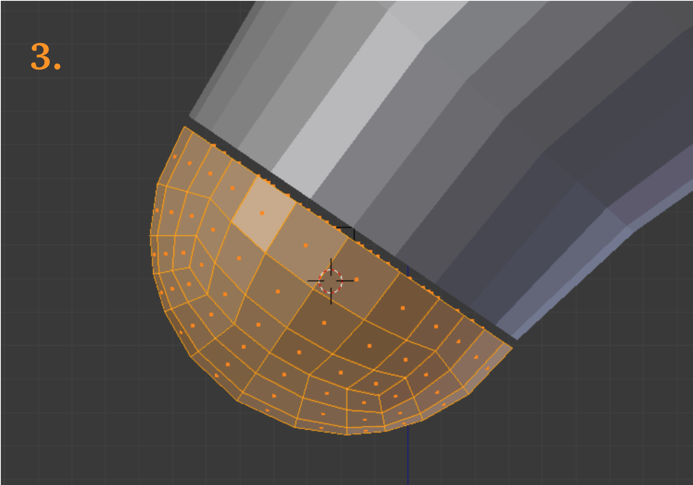
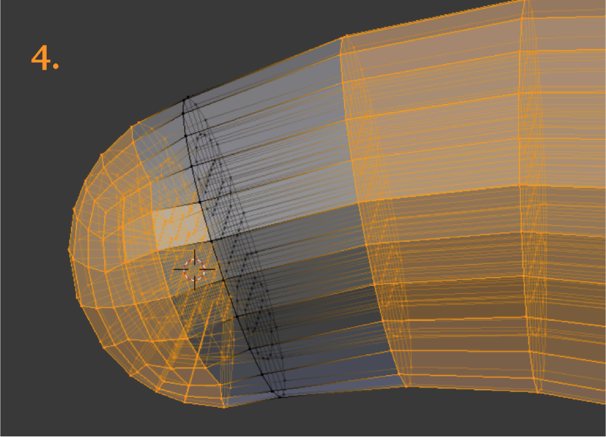
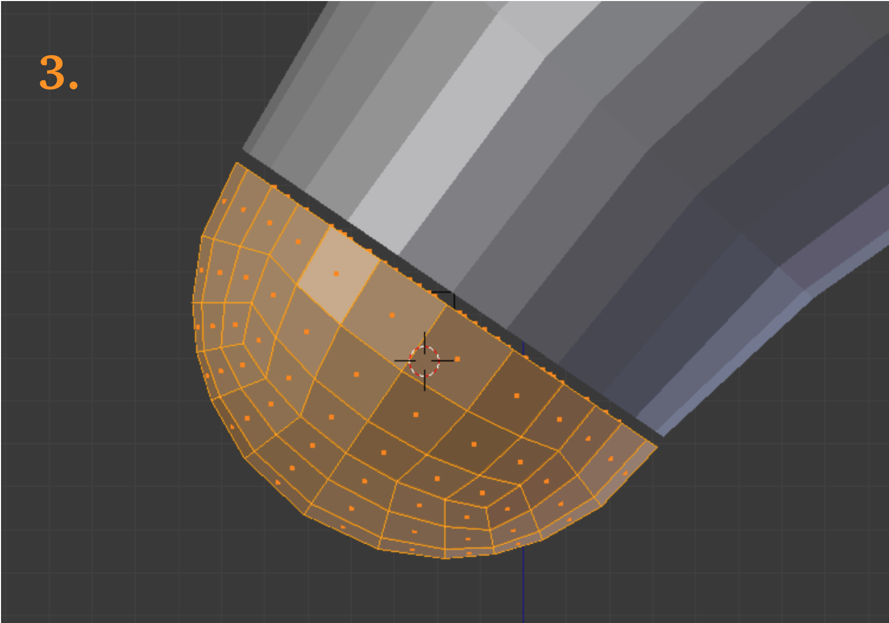
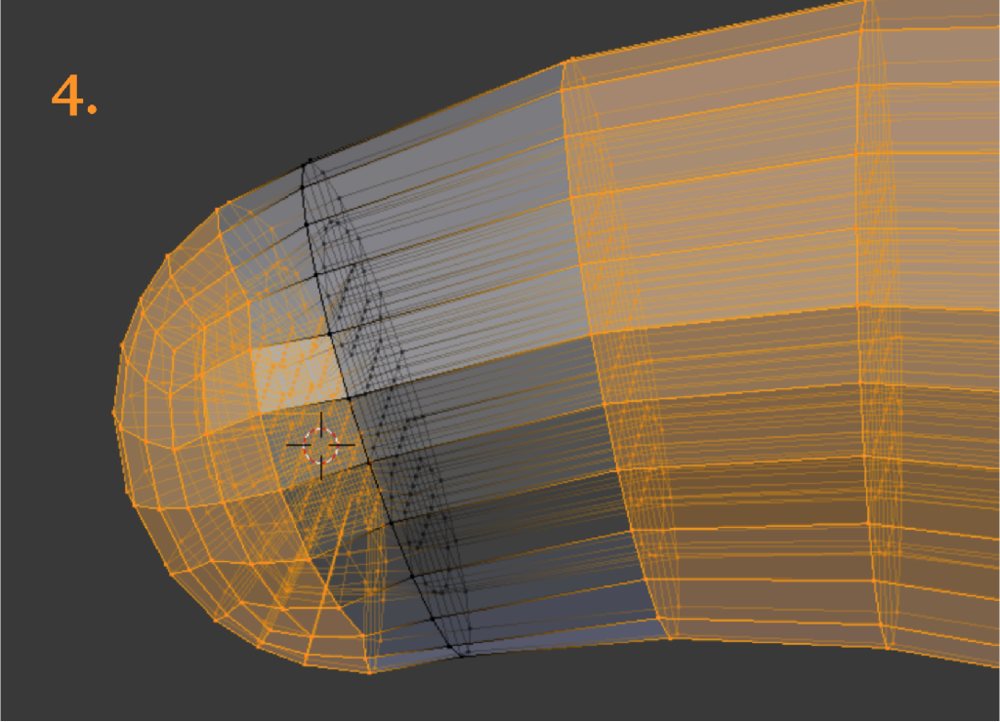

Demo 15
This object is a rigging hook; the model can be found in the INRIA model repository as an .obj file, and is imported into Blender with Blender ’ s .obj import script. Its title is “gancho” (See References). The usual Tris-to-Quads command is given, but there is no need for Partial Dissolve. From experience with this object, we decide to start from the left side and work towards the right.
The decision concerning which quad pattern to use is important. It should be flexible enough to adapt to cross sections of varying shapes, but should also be as simple as possible. We settle on a 3-division pattern with 2 segments. (The Preview nomenclature for divisions and segments is shown right.)
The hook’s ring and associated parts are identified right. We notice that originally the depiction of the ring is mere graphic shorthand; it has no real connection with the stem. Preview cannot make the chosen quad pattern in torus form, though it can as a cylinder. Shown right is the array which we created as a substitute ring. It needs to have a tee joint with the stem, which is not a trivial process.
This object is a rigging hook; the model can be found in the INRIA model repository as an .obj file, and is imported into Blender with Blender ’ s .obj import script. Its title is “gancho” (See References). The usual Tris-to-Quads command is given, but there is no need for Partial Dissolve. From experience with this object, we decide to start from the left side and work towards the right.
The decision concerning which quad pattern to use is important. It should be flexible enough to adapt to cross sections of varying shapes, but should also be as simple as possible. We settle on a 3-division pattern with 2 segments. (The Preview nomenclature for divisions and segments is shown right.)
The hook’s ring and associated parts are identified right. We notice that originally the depiction of the ring is mere graphic shorthand; it has no real connection with the stem. Preview cannot make the chosen quad pattern in torus form, though it can as a cylinder. Shown right is the array which we created as a substitute ring. It needs to have a tee joint with the stem, which is not a trivial process.
Regarding the array for the ring, we use the bezier circle method of making it. Which variable gets the relative offset, and which Deformation Axis is chosen, are things we determine experimentally, though the rotation of the starting slice seems to have something to do with it.
The way we make the stem and hilt is worth mentioning. We lengthen the stem by the thickness of the hilt using the Edges Only method. Then selecting the outer faces, we use the Vertex Normals flavor of extrude to extend the new hilt to the proper diameter. This is as close as we can get Blender to oblige our needs; it still remains for us to fill in some internal faces in the hilt.
If we want to make sure that all elements in a mesh we create are actually present, we can do a flythrough in Gmsh, using the shrinking factor in the mesh options dialog. Shown is half of the tee we create to tie the ring to the stem.
A similar process can be achieved in Paraview by using the Shrink filter.
In making the tee, we do the square core first, using a split mesh to save work. At the far right of the picture can be seen the central grid we used for Knife Projecting the juncture of the toroidal array (everything else being hidden at the time). We are able to check the quality of the partially finished piece and report it to be good. This picture anticipates things a bit; it is not time to join things back together yet.
The middle layer is finished. A little late, but we realize that we have symmetry across the z-axis as well as the y-axis, allowing the mesh to be split again, thus saving more time in creating the last layer.

The ring and stem assembly in finished form is shown right. The quality was improved somewhat by grooming a few elements. The Paraview Extract Selection filter used on top of the Mesh Quality filter yielded a bounding box which we used to locate the low quality element in Blender.
With the quad design chosen and the tricky stem assembly out of the way, we can go on to the serpentine gancho body.
Knife Project cuts are made to extract better section loops than those initially available, and at a later stage we will make a second series of cuts.
At the centroid of each loop we place an empty. Each empty identifies the location of a control point in a single bezier curve. The bezier curve will govern the behavior of an array, which will advance the progress of a group (or parcel) of elements.
At the centroid of each loop we place an empty. Each empty identifies the location of a control point in a single bezier curve. The bezier curve will govern the behavior of an array, which will advance the progress of a group (or parcel) of elements.
The task before us would seem to lend itself to either a Bridge strategy or a Loft strategy, as contained in the Loop Tools Add-On menu, accessed by the ‘w’ key. Even the possibility of using Shrinkwrap occurs.
However, the code structure of all these functions protect them against use with non-manifold meshes. Therefore we must resort to a less automated strategy.
However, the code structure of all these functions protect them against use with non-manifold meshes. Therefore we must resort to a less automated strategy.
Above is seen the Preview cylinder in the role of an array object subject to the bezier curve. On this occasion we do not try to rotate the array object, and the Deformation Axis and Relative Offset seen in the Modifier panel reflect this. The object Origin is automatically set at the geometrical centroid of the array as it will appear, after Applying. It is necessary to use the ‘g’ key to adjust the position of the array, until it lines up at its beginning and end points. Note that we have left the Merge function unchecked, because it readily creates triangles. The consequence is that when reconciling sections we will have to remove lots of doubles.
Because of its suggestive shape, we will refer to the precursor array as the ‘slinky’.
Because of its suggestive shape, we will refer to the precursor array as the ‘slinky’.
The slinky sections are shown above, with the first showing a special edge. Each section will be equipped with such an edge, and they will make cutters. At right is seen the set of cutters ready to slice a fresh gancho.
As the gancho has already been cut once, it may seem wasteful to cut it again. However, we feel this is the only way to locate precisely.
Below: Reconciling a section. We can scale and grab, so long as we restore the plane.
As the gancho has already been cut once, it may seem wasteful to cut it again. However, we feel this is the only way to locate precisely.
Below: Reconciling a section. We can scale and grab, so long as we restore the plane.
At right is seen the mesh configuration after we have combined 13 sections.
Pictures below: 1. Joining the ring assembly to the gancho. With the quad designs on opposite sides of the joint at different scaling, unpleasantness could arise if the faces are in-plane with each other. Instead, we move the two objects apart a small distance before joining and doing the sewing. 2. The tapered area is collapsed once a successful tie-in has been made. 3. The imported Febio Preview sphere has 3 divisions and 2 segments, but unlike a cylinder, the divisions are not necessarily equal in size. 4. The hemisphere is sewn into the tip area of the gancho.
 



The mesh quality according to Verdict’s Scaled Jacobian standard (right) is acceptable, as is that of the Diagonal measure (below). The mesh has 5760 elements and 6694 nodes. If refined one time in Gmsh, it would have 46,080 elements and 49,687 nodes (green).